Crystal
Crystal是2015年秋天加入北航Toastmasters的会员，来自"瓷都"景德镇。她第一次来时还迟到了，在门口犹豫要不要进去，幸好一位学姐笑着说"没关系的，进去吧"，这才有了后来的故事。她坦言自己"很容易怯场"，最初的期待只是"能在台上好好说话"。在新人问卷里她写道，最吸引她的是俱乐部里友善热情的氛围，以及可以尝试多种角色、全方位锻炼的机会。
她成长得很快。2015年10月30日，她带来破冰演讲《Each place has its streams in from all over the country》，捧着一只阳光能穿透的瓷杯、展示自己十岁时写的字，反复强调"景德镇是一座城市，不是一个小镇"，被小编称为又一位"才气爆棚"的才女。此后她以惊人的节奏推进项目——据记载她曾在30天内完成到第4次演讲——从讲相对论哲学的CC2《The Truth of Relativity》，到导师Amy指导下的CC4《3 stages of life》，再到讲"曝光效应"心理学的CC5《"Terrible" Photos》，她的风格始终学术、专业而独特。2016年春季比赛，她作为英文演讲赛的选手"邻家小镁铝"登台，与Gastby、Vance同场竞技。
除了备稿演讲，Crystal也是俱乐部活跃的服务者，多次担任即兴主持（Table Topics Master），在116、118、127等多次例会主持即兴环节，抛出"Mask""11.11""Almost"等主题引导大家上台。她一度离开又回归——2017年重返北航头马的那场演讲，小编评价她"依然带着一如既往学术、专业、精彩的风格"，并毫无悬念地拿下Best。从门口踌躇的新人，到台上从容的Best得主，Crystal用行动证明了怯场可以被一次次的登台战胜。
闯关之路 · Competent Communication
做过的演讲 · 4 场
担任过的职责
里程碑
- 2015-10-30 破冰登台在116th例会完成CC1《Each place has its streams》，带瓷杯讲述瓷都景德镇。
- 2015-11-23 新会员专访作为新成员被推送介绍，坦言自己容易怯场，期待能在台上好好说话。
- 2016-03-11 首次参赛作为英文演讲赛选手亮相128th春季比赛。
- 2017-03-03 回归并夺Best重返北航头马，以CC5《Terrible Photos》拿下Best。
为俱乐部做的事
- 多次担任即兴主持(TTM)，为Mask、11.11、Almost等例会设计主题并引导成员上台
- 以学术、专业的风格持续输出备稿演讲(CC1-CC5)，丰富俱乐部演讲内容
- 代表俱乐部参加2016年春季英文演讲比赛
- 离开后回归俱乐部，继续以高质量演讲贡献并夺得Best
照片墙 · 时间线
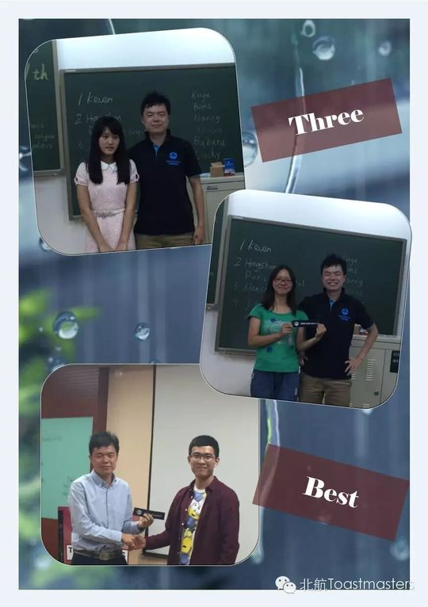
✓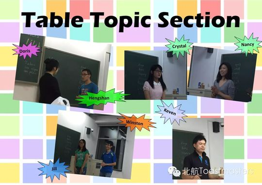
✓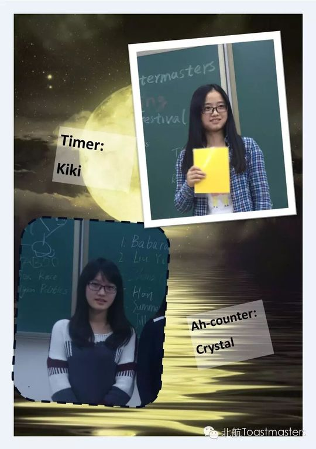
✓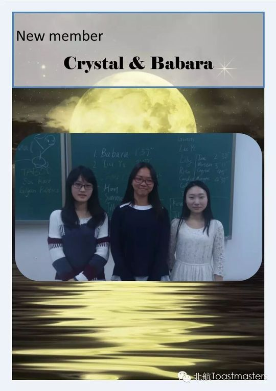
✓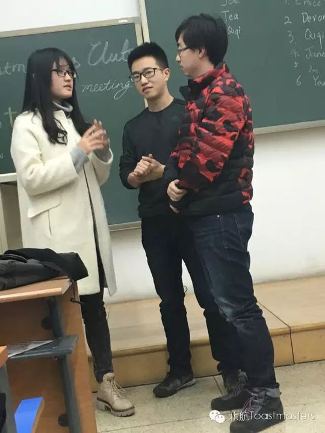
✓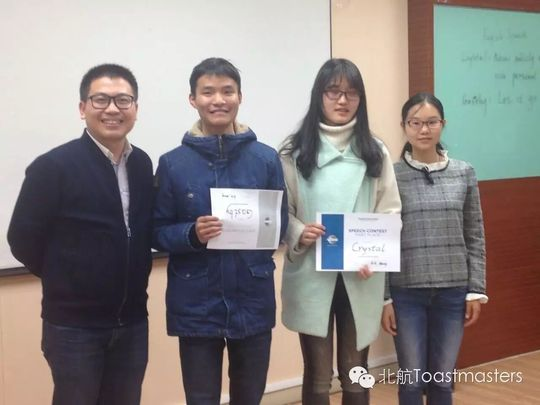
✓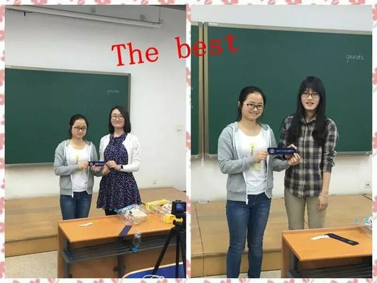
✓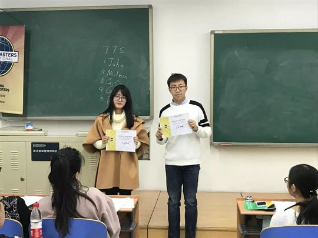
✓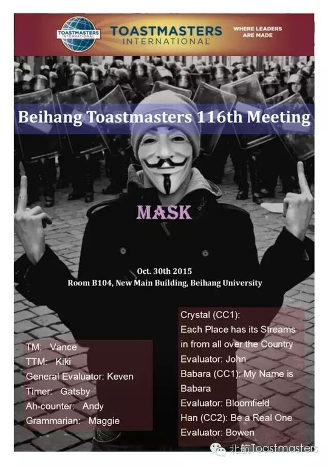

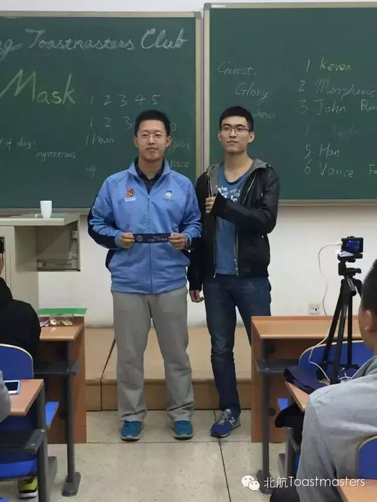
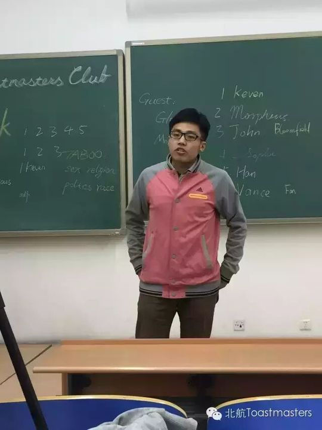
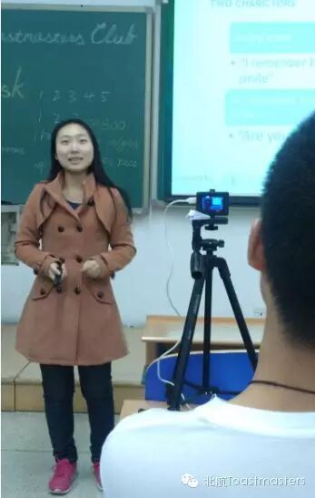
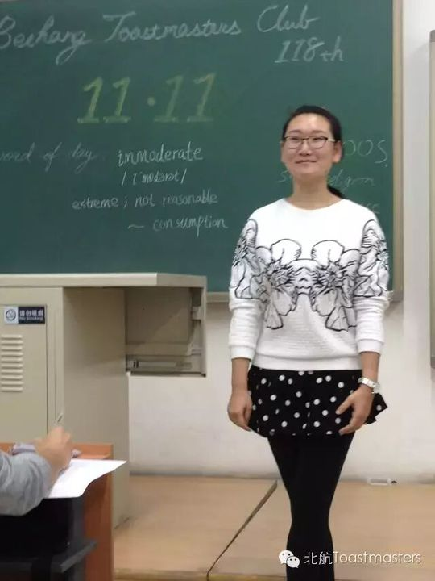
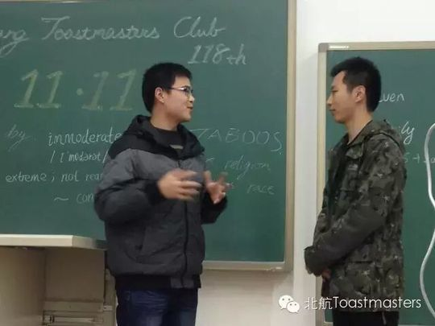
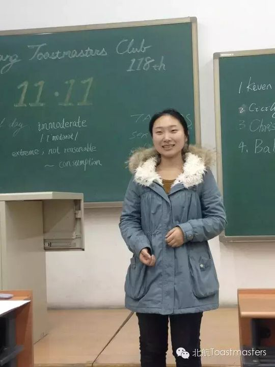
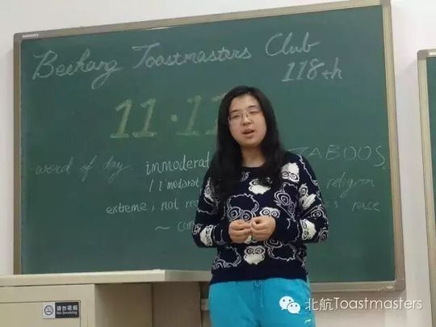
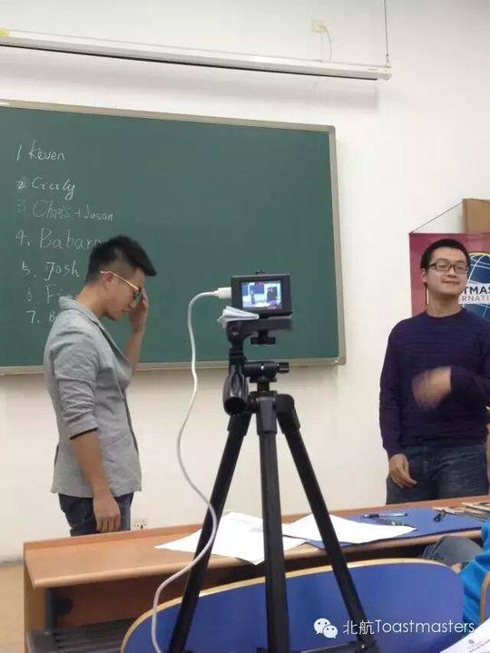

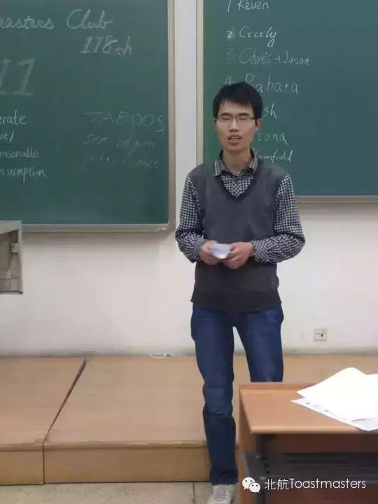
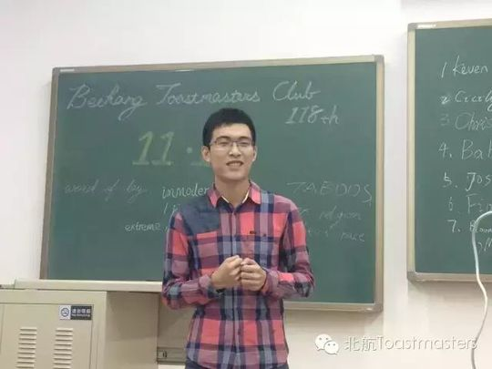

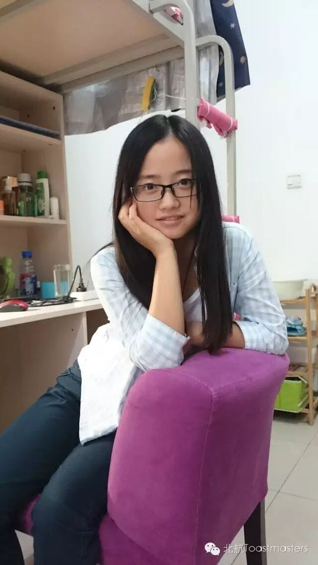


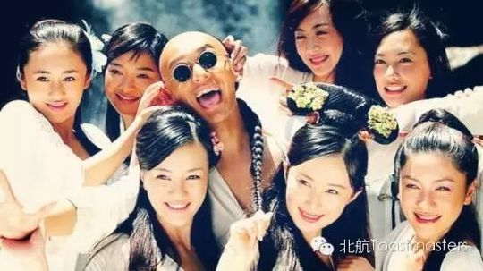
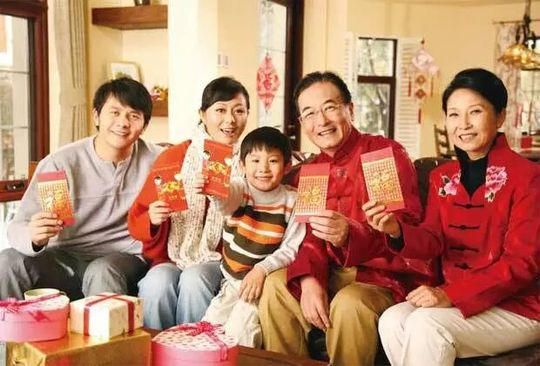